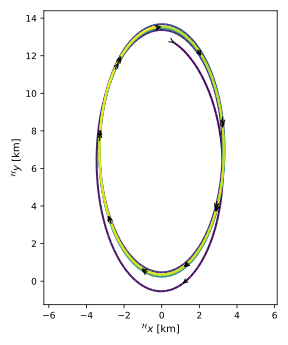
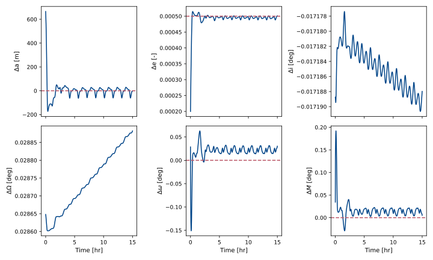
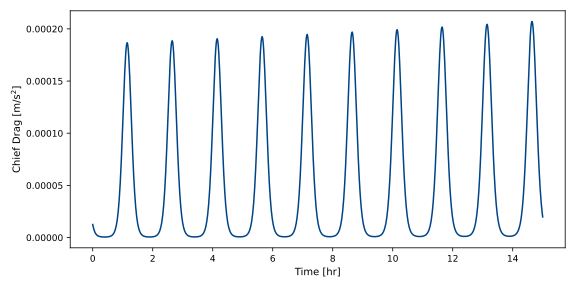
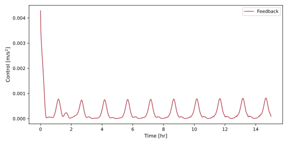

scenarioFormationFlyingWithDrag
This scenario uses MJScene to model the relative motion of two spacecraft in Low Earth Orbit: a chief and a deputy.
The spacecraft are defined in CHIEF_DEPUTY_SCENE_XML. Each vehicle is modeled
as a single point-mass body with three translational sliding joints (x, y, z).
Their inertial properties are assigned directly in the XML.
Gravity is modeled using the Module: NBodyGravity model, with a point-mass Earth defined by Module: pointMassGravityModel. The exponential atmospheric model (Module: exponentialAtmosphere) is optionally added so that the chief and deputy can experience cannonball drag.
Aerodynamic drag is computed using CannonballDrag. For each spacecraft, the drag model uses:
Its inertial state (to obtain velocity)
The atmospheric density from the
exponentialAtmospheremodelA constant drag geometry message (projected area, drag coefficient, center of pressure)
The aerodynamic drag model outputs a force vector in the body-fixed site used by MuJoCo. Each spacecraft is given different drag coefficients, thus caussing differential drag between them that makes formation flying harder.
Feedback control is implemented using the OrbitalElementControl module. This controller regulates the classical orbital elements of the deputy relative to a target offset from the chief. The controller operates on the orbital elements produced by orbElemConvert and maps commanded inertial forces to a site-fixed force at the deputy’s center of mass using CmdForceInertialToForceAtSite.
This scenario demonstrates:
How to construct a multi-body MuJoCo scene with two independent spacecraft
How to configure translation-only scenarios
How to model gravity on multiple bodies using the Module: NBodyGravity model
How to apply aerodynamic forces
How to configure and apply a classical-element feedback controller for formation control
How to record and visualize inertial trajectories, orbital-element histories, and Hill-frame relative motion
All simulation models, messages, and recorders are kept alive by storing them in dataclasses defined in this script. This ensures that Python’s garbage collector does not delete any objects that are still needed during the simulation.
Illustration of Simulation Results




- class scenarioFormationFlyingWithDrag.InitialOrbitInfo(semiMajorAxis: float, orbitPeriod: float)[source]
Bases:
objectInitial orbit geometry for the chief deputy pair.
- class scenarioFormationFlyingWithDrag.PlotConfig(showPlots: bool = False, saveFolder: str | None = None, plotChiefInertial: bool = True, plotChiefDrag: bool = True, plotChiefDensity: bool = False, plotControl: bool = True, plotOeChief: bool = True, plotOeDeputy: bool = False, plotOeDiff: bool = True, plotHillXY: bool = True)[source]
Bases:
objectPlot configuration and output control.
- class scenarioFormationFlyingWithDrag.RecorderHandles(chiefState: Any, deputyState: Any, dragChief: Any | None = None, densityChief: Any | None = None, oeFeedbackForce: Any | None = None)[source]
Bases:
objectHandles to all recorders used in the simulation.
- class scenarioFormationFlyingWithDrag.ScenarioConfig(drag: bool = True, control: bool = True, integralControl: bool = True)[source]
Bases:
objectScenario configuration toggles.
- class scenarioFormationFlyingWithDrag.SimulationModels(scSim: SimBaseClass, integrator: StateVecIntegrator, scene: MJScene, chiefBody: MJBody, deputyBody: MJBody, gravity: NBodyGravity, atmo: ExponentialAtmosphere, dragChief: CannonballDrag | None = None, dragDeputy: CannonballDrag | None = None, orbElemConvertChief: OrbElemConvert | None = None, orbElemConvertDeputy: OrbElemConvert | None = None, orbElemTarget: OrbElemOffset | None = None, oeFeedback: OrbitalElementControl | None = None, inertialToSiteForce: CmdForceInertialToForceAtSite | None = None, controlActuatorDeputy: MJForceActuator | None = None, dragGeomChiefMsg: DragGeometryMsg | None = None, dragGeomDeputyMsg: DragGeometryMsg | None = None, offsetElementsMsg: ClassicElementsMsg | None = None)[source]
Bases:
objectHandles to all models and messages that must remain in scope.
- class scenarioFormationFlyingWithDrag.SimulationTimeSeries(times: ndarray, posChief: ndarray, velChief: ndarray, posDeputy: ndarray, velDeputy: ndarray, oeChief: ndarray, oeDeputy: ndarray, oeDiff: ndarray, hillPosition: ndarray, hillVelocity: ndarray)[source]
Bases:
objectAll time history data required for plotting and analysis.
- scenarioFormationFlyingWithDrag.addRecorders(models: SimulationModels) RecorderHandles[source]
Attach all recorders used for postprocessing and keep them in a container.
- scenarioFormationFlyingWithDrag.configureControlModels(models: SimulationModels, planet: Any, targetOeDiffPayload: ClassicElementsMsgPayload, kProp: ndarray, kInt: ndarray, scenarioConfig: ScenarioConfig) None[source]
Configure orbital element feedback control and force mapping.
- scenarioFormationFlyingWithDrag.configureDragModels(models: SimulationModels) None[source]
Attach aerodynamic drag models to chief and deputy.
- scenarioFormationFlyingWithDrag.createFigures(scenarioConfig: ScenarioConfig, plotConfig: PlotConfig, models: SimulationModels, recorders: RecorderHandles, timeSeries: SimulationTimeSeries, targetOeDiffPayload: ClassicElementsMsgPayload, kProp: ndarray) Dict[str, Figure][source]
Generate all requested figures, optionally saving them as PDF files.
- scenarioFormationFlyingWithDrag.createSimulationModels(planet: Any, scenarioConfig: ScenarioConfig, targetOeDiffPayload: ClassicElementsMsgPayload, kProp: ndarray, kInt: ndarray, dt: float) SimulationModels[source]
Create and connect all simulation models, returning a container with live references.
- scenarioFormationFlyingWithDrag.deputyToHillFrame(nRC: ndarray, nVC: ndarray, nRD: ndarray, nVD: ndarray) Tuple[ndarray, ndarray][source]
Transform deputy inertial state to Hill frame relative position and velocity.
- Parameters:
nRC – Chief position in inertial frame, shape (N, 3).
nVC – Chief velocity in inertial frame, shape (N, 3).
nRD – Deputy position in inertial frame, shape (N, 3).
nVD – Deputy velocity in inertial frame, shape (N, 3).
- Returns:
hillRho – Deputy relative position in Hill frame, shape (N, 3).
hillRhoPrime – Deputy relative velocity in Hill frame, shape (N, 3).
- scenarioFormationFlyingWithDrag.extractTimeSeries(planet: Any, recorders: RecorderHandles) SimulationTimeSeries[source]
Convert raw recorder data into orbital elements, relative coordinates, and time arrays.
- scenarioFormationFlyingWithDrag.plotGradient(ax: Axes, x: ndarray, y: ndarray, *, cmap: str = 'viridis', linewidth: float = 2.0, arrows: bool = True, arrowEvery: int = 40, showEndpoints: bool = False, **kwargs: Any) LineCollection[source]
Plot a line whose color varies along its length, optionally with arrows and endpoints.
- Parameters:
ax – Matplotlib axes on which to draw.
x – Coordinate arrays.
y – Coordinate arrays.
cmap – Name of the colormap to use.
linewidth – Width of the plotted line.
arrows – If True, draw arrows along the trajectory.
arrowEvery – Spacing between arrows in number of points.
showEndpoints – If True, mark start and end points.
- Returns:
The line collection added to the axes.
- Return type:
LineCollection
- scenarioFormationFlyingWithDrag.run(scenarioConfig: ScenarioConfig = ScenarioConfig(drag=True, control=True, integralControl=True), plotConfig: PlotConfig = PlotConfig(showPlots=False, saveFolder=None, plotChiefInertial=True, plotChiefDrag=True, plotChiefDensity=False, plotControl=True, plotOeChief=True, plotOeDeputy=False, plotOeDiff=True, plotHillXY=True)) Dict[str, Figure][source]
Run the chief deputy relative motion scenario with optional drag and feedback control.
This function builds the simulation, sets initial conditions, runs the dynamics, collects time histories, generates figures, and optionally shows and or saves them.
- Parameters:
scenarioConfig – High level configuration toggles for drag and control.
plotConfig – Plot visibility and output configuration.
- Returns:
Mapping from figure name to matplotlib Figure instance.
- Return type:
dict
- scenarioFormationFlyingWithDrag.runSimulation(models: SimulationModels, orbitInfo: InitialOrbitInfo) None[source]
Initialize and execute the simulation for a fixed multiple of the orbit period.
- scenarioFormationFlyingWithDrag.rv2elemVector(mu: float, rBNN: ndarray, vBNN: ndarray) ndarray[source]
Convert arrays of Cartesian states to classical orbital elements with mean anomaly.
- scenarioFormationFlyingWithDrag.setInitialConditions(models: SimulationModels, planet: Any) InitialOrbitInfo[source]
Set initial orbital elements for chief and deputy and propagate to Cartesian states.